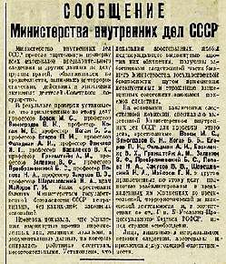

Борис Акунин
Мой календарь
Туннели бывают очень длинные и совсем темные, причем мрак делается всё чернее и чернее.
В начале 1953 года многим в СССР казалось, что после многолетних испытаний и ужасов страна проваливается совсем в преисподнюю. В январе было запущено «Дело врачей», плод какой-то уже запредельно безумной паранойи.
Оказывается, самые лучшие врачи страны - «убийцы в белых халатах». А поскольку в этом сословии традиционно много евреев, которые, как к тому времени уже было установлено, не советские патриоты, а космополиты и двурушники, державу охватил праведный гнев против «бродяг в человечестве». Совсем недавно закончился Холокост, и вот надвигалась новая расправа. В открытую говорили, что всех «лиц еврейской национальности» погрузят в вагоны и депортируют за Байкал - пусть вредят там, под конвоем.
Мать рассказывала мне, как было страшно, и как после смерти Сталина стало еще страшней, потому что тот все-таки был хоть и строгий, но вождь и отец, а эти какие-то мелкотравчатые, дерганые и всем ясно, что заправляет ими Берия.
Но, как поет Высоцкий, «коридоры кончаются стенкой, а туннели выводят на свет». И это оказался не тупиковый коридор, а туннель.
4 апреля 1953 года в жуткой газете «Правда», много лет печатавшей всякие страшилки, вдруг появляется бесстрастное сообщение: «…были арестованы неправильно, без каких-либо законных оснований».
И забрезжил свет, и постепенно рассеялась тьма.
Сегодняшняя годовщина - напоминание о том, что самая длинная и беспросветная ночь все равно в конце концов заканчивается.